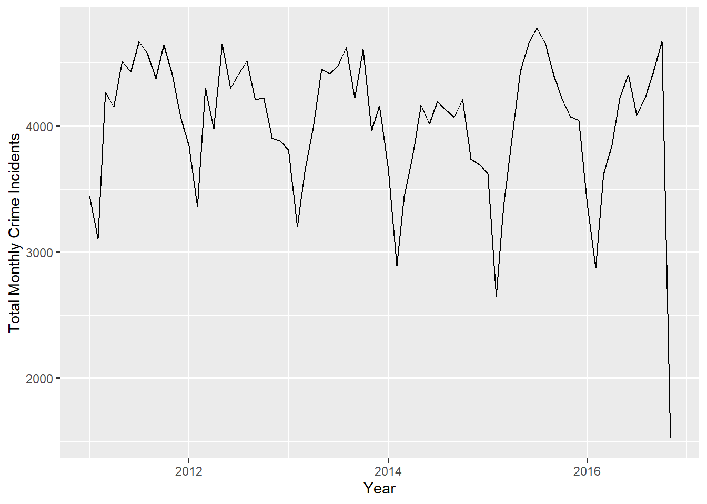
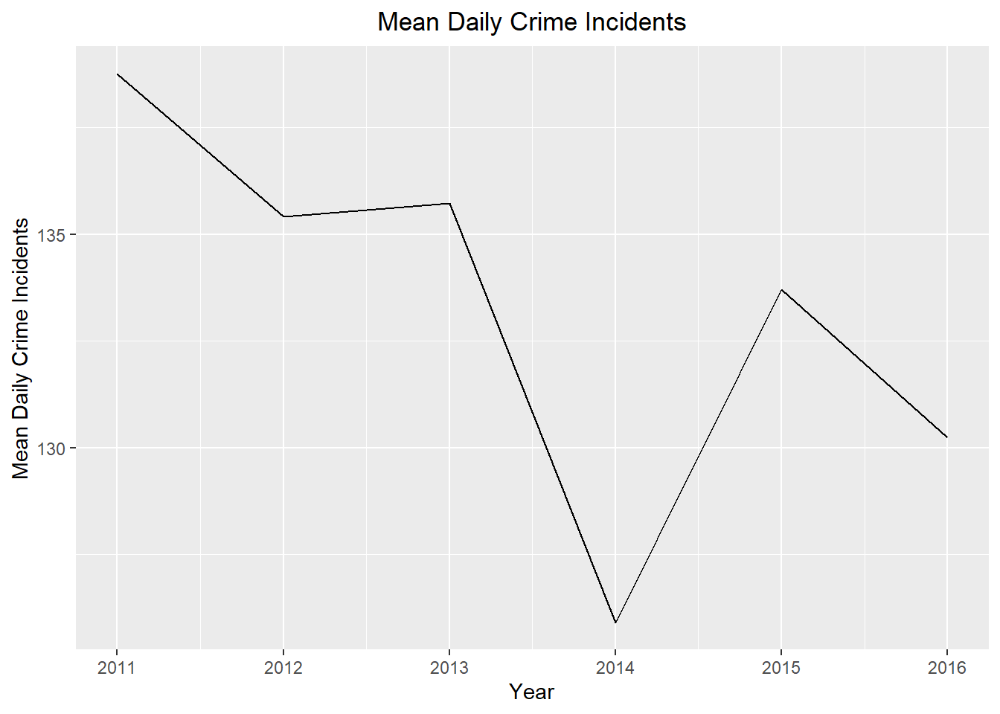
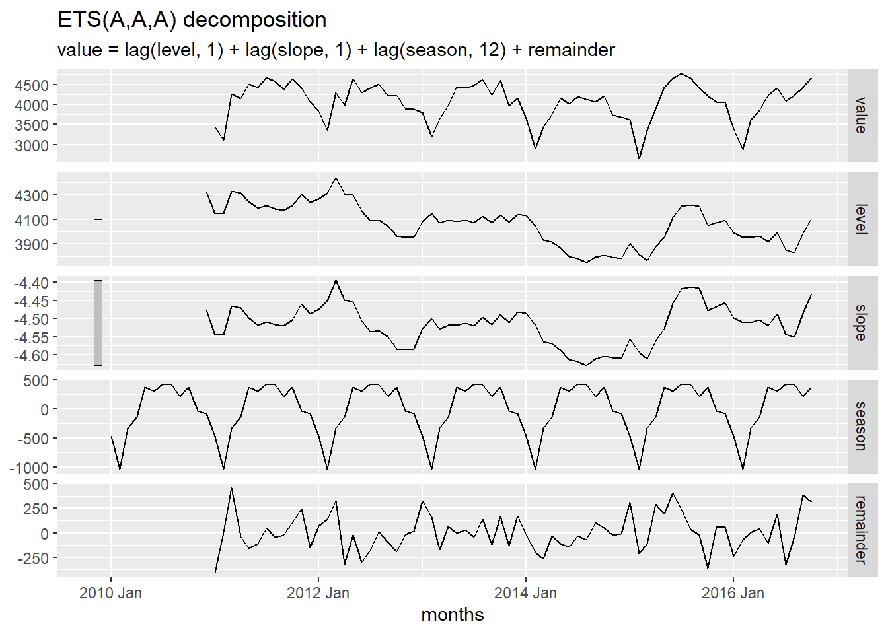
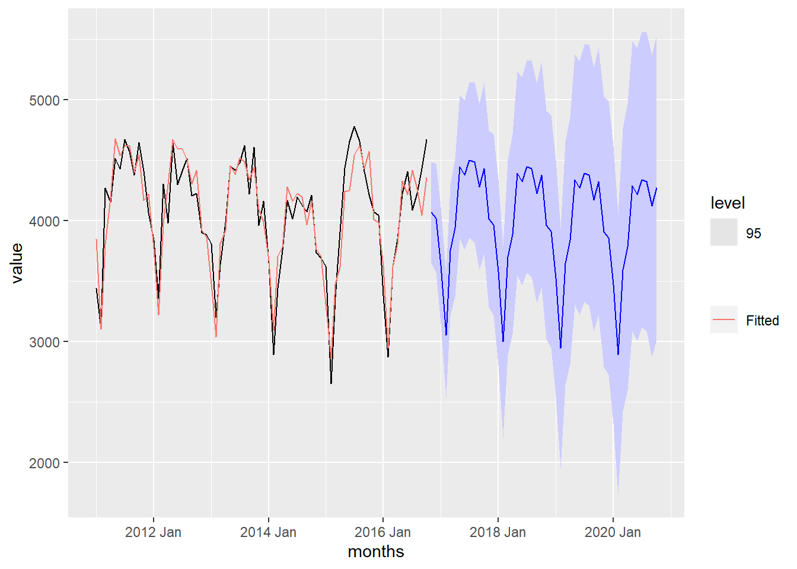
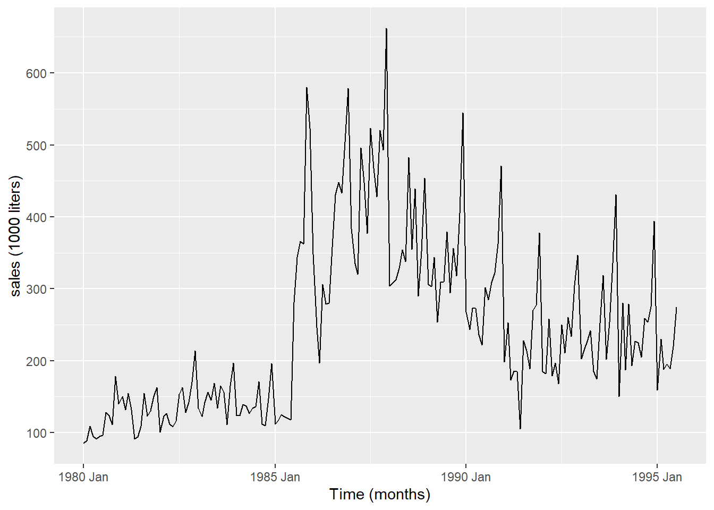

Implement the Holt-Winter method to forecast time series
Justijy the need for the Holt-Winters method of exponential smoothing
Remember how to obtain initial parameters for the H-W algorithm
Explain the H-W method equatons and parameters for additive decomposition models
Explain the H-W forecasting equation for additive decomposition models .Eq 3.22
Explain the H-W method equatons and parameters for multiplicative decomposition models
State the H-W forecasting equation for multiplicative decomposition models .Eq 3.23
Use HoltWinters() to forecast additive model time series
Use HoltWinters() to forecast multiplicative model time series
Interpret the coeficient estimates a_n, b_n, s_n of H-W smoothing algorithm
Interpret the smoothing parameter estimates alpha, beta, gamma of H-W smoothing algorithm
Plot the H-W decomposition of a TS (see Fig 3.10)
Plot the H-W fitted values versus the original time series (see Fig 3.11)
Plot H-W predictions along time series realizations (see Fig 3.13)
Holt-Winters (Additive)
Small Group Activity: Decomposition of Baltimore Crime Data (20 min)
Background
The City of Baltimore publishes crime data, which can be accessed through a query. This dataset is sourced from the City of Baltimore Open Data and is updated monthly. You can explore the data on data.world.
Use the following code to import the data:
Show the code
if (!require("pacman")) install.packages("pacman")pacman::p_load("tsibble", "fable","feasts", "tsibbledata","fable.prophet", "tidyverse","patchwork", "rio")crime_df <-read.csv("https://query.data.world/s/gibquqj7violcatsd74xyyg7r4fwxp?dws=00000", header=TRUE, stringsAsFactors=FALSE)
The data set consists of 285807 rows and 12 columns. There are a few key variables:
Date and Time: Records the date and time of each incident.
Location: Detailed coordinates of each incident.
Crime Type: Description of the type of crime.
When exploring a new time series, it is crucial to carefully examine the data. Here are a few rows of the original data set.
CrimeDate
CrimeTime
CrimeCode
Location
Description
Inside.Outside
Weapon
Post
District
Neighborhood
Location.1
Total.Incidents
11/12/2016
02:35:00
3B
300 SAINT PAUL PL
ROBBERY - STREET
O
111
CENTRAL
Downtown
(39.2924100000, -76.6140800000)
1
11/12/2016
02:56:00
3CF
800 S BROADWAY
ROBBERY - COMMERCIAL
I
FIREARM
213
SOUTHEASTERN
Fells Point
(39.2824200000, -76.5928800000)
1
11/12/2016
03:00:00
6D
1500 PENTWOOD RD
LARCENY FROM AUTO
O
413
NORTHEASTERN
Stonewood-Pentwood-Winston
(39.3480500000, -76.5883400000)
1
11/12/2016
03:00:00
6D
6600 MILTON LN
LARCENY FROM AUTO
O
424
NORTHEASTERN
Westfield
(39.3626300000, -76.5516100000)
1
11/12/2016
03:00:00
6E
300 W BALTIMORE ST
LARCENY
O
111
CENTRAL
Downtown
(39.2893800000, -76.6197100000)
1
11/12/2016
03:00:00
4E
6900 MCCLEAN BLVD
COMMON ASSAULT
I
HANDS
423
NORTHEASTERN
Hamilton Hills
(39.3707000000, -76.5670900000)
1
⋮
⋮
⋮
⋮
⋮
⋮
⋮
⋮
⋮
⋮
⋮
⋮
01/01/2011
23:38:00
4D
800 N FREMONT AV
AGG. ASSAULT
I
HANDS
123
WESTERN
Upton
(39.2981200000, -76.6339100000)
1
Check Your Understanding
Using the command crime_df |> summary(), we learn that the Total.Incidents always equals 1. What does each row in the data frame represent?
Show the code
# Data Summary and Aggregation# Group by dates column and summarize from Total.Incidents columndaily_summary_df <- crime_df |>rename(dates = CrimeDate) |>group_by(dates) |>summarise(incidents =sum(Total.Incidents))# Data Transformation and Formatting# Select relevant columns, format dates, and arrange the datacrime_data <- daily_summary_df |>select(dates, incidents) |>mutate(dates =mdy(dates)) |>mutate(month =month(dates),day =day(dates),year =year(dates) ) |>select(dates, month, day, year, incidents) |>arrange(dates)# Convert formatted data to a tsibble with dates as the indexcrime_tsibble <-as_tsibble(crime_data, index = dates)
Here are a few rows of the summarized data.
dates
incidents
01/01/2011
185
01/01/2012
176
01/01/2013
157
01/01/2014
139
01/01/2015
157
01/01/2016
148
⋮
⋮
12/31/2013
128
12/31/2014
108
12/31/2015
97
The following table summarizes the number of days in each month for which crime data were reported.
What are some problems that could arise from incomplete data?
How do you recommend we address the missing data?
Here is a time plot of the number of crimes reported in Baltimore daily.
Show the code
# Time series plot of total incidents over timecrime_plot <-autoplot(crime_tsibble, .vars = incidents) +labs(x ="Time",y ="Total Crime Incidents",title ="Total Crime Incidents Over Time" ) +theme(plot.title =element_text(hjust =0.5))# Display the plotcrime_plot
Check Your Understanding
What do you notice about this time plot?
Describe the trend
Is there evidence of seasonality?
Is the additive or multiplicative model appropriate?
Which date has the highest number of recorded crimes? Can you determine a reason for this spike?
Monthly Summary
We could analyze the data at the daily level, but for simplicity we will model the monthly totals.
Show the code
crime_monthly_ts <- crime_tsibble |>index_by(month_year =floor_date(as_date(dates), "month")) |>summarise(value =sum(incidents))# Plot mean annual total incidents using autoplotautoplot(crime_monthly_ts, .vars = value) +labs(x ="Year",y ="Total Monthly Crime Incidents", ) +theme(plot.title =element_text(hjust =0.5))

There is incomplete data for 2016, as data were not provided after 11/12/2016. We will only consider data through January 2016. We will omit any data after October 2016.
We can use the following function to compute the moving average
# compute moving averagecompute_moving_average <-function(df, variable, periods =12) { sum <-0for (i in1:(periods /2)) { sum <- sum +lead(eval(substitute(variable), df), i) # x_{t+i} sum <- sum +lag(eval(substitute(variable), df), i) # x_{t-i} } sum <- sum +eval(substitute(variable), df) sum <- sum -lag(eval(substitute(variable), df), periods /2) /2 sum <- sum -lead(eval(substitute(variable), df), periods /2) /2 df$m_hat <- sum / periodsreturn(df)}crime_decomposition <- crime_monthly_ts |>compute_moving_average(value)
Here are the first few rows of this new file.
month_year
value
m_hat
2011-01-01
3440
NA
2011-02-01
3108
NA
2011-03-01
4269
NA
2011-04-01
4149
NA
2011-05-01
4516
NA
2011-06-01
4427
NA
2011-07-01
4669
4237.500
2011-08-01
4574
4264.500
2011-09-01
4377
4276.292
2011-10-01
4644
4270.583
2011-11-01
4411
4269.000
2011-12-01
4067
4269.042
2012-01-01
3838
4252.875
Estimated Monthly Multiplicative Effect
Check Your Understanding
Use the 12-month centered moving average computed above to calculate the estimated monthly multiplictive effect.
Question1
Question2
Calculate Mean Crime Incidents Monthly by Year
# Calculate mean annual total incidentscrime_annual_ts <- crime_tsibble |>index_by(year =year(dates)) |>summarise(value =mean(incidents))# Plot mean annual total incidents using autoplotautoplot(crime_annual_ts, .vars = value) +labs(x ="Year",y ="Mean Daily Crime Incidents",title ="Mean Daily Crime Incidents" ) +theme(plot.title =element_text(hjust =0.5))

Monthly Boxplots of Total Crime Incidents
# Create boxplotsggplot(crime_tsibble, aes(x = month, y = incidents)) +geom_boxplot() +labs(x ="Month",y ="Total Crime Incidents",title ="Boxplots of Total Crime Incidents by Month" ) +theme(plot.title =element_text(hjust =0.5))
Warning: Continuous x aesthetic
ℹ did you forget `aes(group = ...)`?
On April 27, 2015, 419 crimes were recorded. These are associated with protests over arrest of Freddie Gray.
CHOCOLATE DATA ANALYSIS STARTS HERE
Estimating the Trend: Moving Average (5 min)
Show the code
# Computes the moving average of values in a time seriescompute_moving_average <-function(df, variable, periods =12) { sum <-0for (i in1:(periods /2)) { sum <- sum +lead(eval(substitute(variable), df), i) # x_{t+i} sum <- sum +lag(eval(substitute(variable), df), i) # x_{t-i} } sum <- sum +eval(substitute(variable), df) sum <- sum -lag(eval(substitute(variable), df), periods /2) /2 sum <- sum -lead(eval(substitute(variable), df), periods /2) /2 df$m_hat <- sum / periodsreturn(df)}chocolate_annual_ts <-summarise(index_by(chocolate_month_ts, year), value =mean(value) ) |>mutate(index = tsibble::yearmonth( mdy(paste0("7/1/",year)) )) |>as_tsibble(index = index)# monthly plotmp <-autoplot(chocolate_month_ts, .vars = value) +geom_line(data = chocolate_annual_ts, aes(x = index, y = value), color ="#56B4E9") +geom_line(data = chocolate_month_ts |>compute_moving_average(value), aes(x = index, y = m_hat), color ="#E69F00") +labs(x ="Month",y ="Searches",title ="Relative Number of Google Searches for 'Chocolate'" ) +theme(plot.title =element_text(hjust =0.5))mp

The blue line illustrates the mean of all the values for each year, plotted at July 1 for each of the respective years. The orange line is the moving average computed using Equation (1.6).
Estimating the Trend: Moving Average (5 min)
Show the code
# Computes the moving average of values in a time seriescompute_moving_average <-function(df, variable, periods =12) { sum <-0for (i in1:(periods /2)) { sum <- sum +lead(eval(substitute(variable), df), i) # x_{t+i} sum <- sum +lag(eval(substitute(variable), df), i) # x_{t-i} } sum <- sum +eval(substitute(variable), df) sum <- sum -lag(eval(substitute(variable), df), periods /2) /2 sum <- sum -lead(eval(substitute(variable), df), periods /2) /2 df$m_hat <- sum / periodsreturn(df)}chocolate_annual_ts <-summarise(index_by(chocolate_month_ts, year), value =mean(value) ) |>mutate(index = tsibble::yearmonth( mdy(paste0("7/1/",year)) )) |>as_tsibble(index = index)# monthly plotmp <-autoplot(chocolate_month_ts, .vars = value) +geom_line(data = chocolate_annual_ts, aes(x = index, y = value), color ="#56B4E9") +geom_line(data = chocolate_month_ts |>compute_moving_average(value), aes(x = index, y = m_hat), color ="#E69F00") +labs(x ="Month",y ="Searches",title ="Relative Number of Google Searches for 'Chocolate'" ) +theme(plot.title =element_text(hjust =0.5))mp

The blue line illustrates the mean of all the values for each year, plotted at July 1 for each of the respective years. The orange line is the moving average computed using Equation (1.6).
Aggregate to the annual level
To help visualize what is happening with a time series, we often aggregate the data in the time series to the annual level. This can make it easier to spot a trend. The first plot is the time series plot of the raw data, and the second plot is a time series plot of the annual means.
chocolate_annual_ts <-summarise(index_by(chocolate_month_ts, year), value =mean(value))# monthly plotmp <-autoplot(chocolate_month_ts, .vars = value) +labs(x ="Month",y ="Searches",title ="Relative Number of Google Searches for 'Chocolate'" ) +theme(plot.title =element_text(hjust =0.5))# yearly plotyp <-autoplot(chocolate_annual_ts, .vars = value) +labs(x ="Year",y ="Searches",title ="Mean Annual Google Searches for 'Chocolate'" ) +scale_x_continuous(breaks =seq(2004, max(chocolate_month_ts$year), by =2)) +theme(plot.title =element_text(hjust =0.5))# display both simultaneouslymp / yp

Check Your Understanding
What do you observe in the trend?
What do you suspect is causing this trend?
When to use additive vs. multiplicative decomposition (5 min)
Additive Decomposition
The additive model for a time series, \(\{x_t\}\), is:
\[
x_t = m_t + s_t + z_t
\]
where \(x_t\) is the observed series, \(m_t\) is the trend, \(s_t\) is the seasonal effect, \(z_t\) is random variation, and \(t = 1, 2, 3, \ldots, n\). We consider \(z_t\) as a sequence of correlated random variables with mean 0.
The residual is the part of the time series that is not explained by the trend or the seasonal effect. This is an estimate of $ For an additive model, the residual is computed as: \[
Residual = Value - Trend - Seasonal
\]
The code below produces a plot showing the original data in the time series, the trend, the seasonal effect, and the residual (random component).